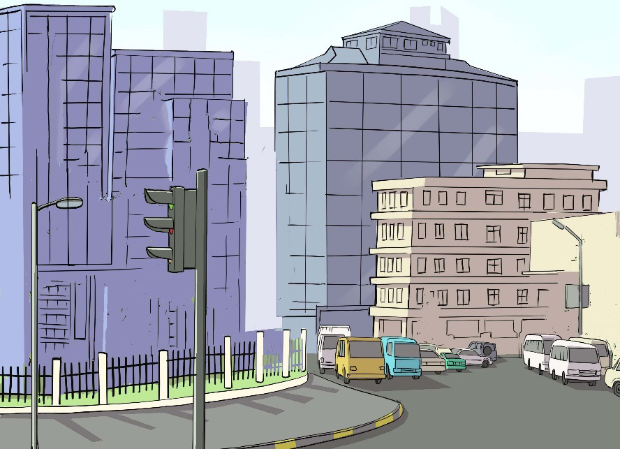

Figure 3.13: Man-made forms of painting
Simple decorative paintings
Simple decorative painting refers to simple paintings an artist can apply to any surface such as a wall, object, picture frame, furniture, canvas, roof, fabric and paper to decorate them.
Advantages of simple decorative painting
Each decorative painting has its specific benefits. Some can be used at exteriors and interiors. Others are applicable to creating metallic or rust finishes, and the rest have waterproof properties. For this reason, it is necessary to evaluate the needs of each coating beforehand. Generally, decorative painting is used to transform the appearance of a surface. Its major purpose is to beautify the appearance of the original looks.

Activity 3.4
Make a still-life composition consisting of a bottle and water jug.